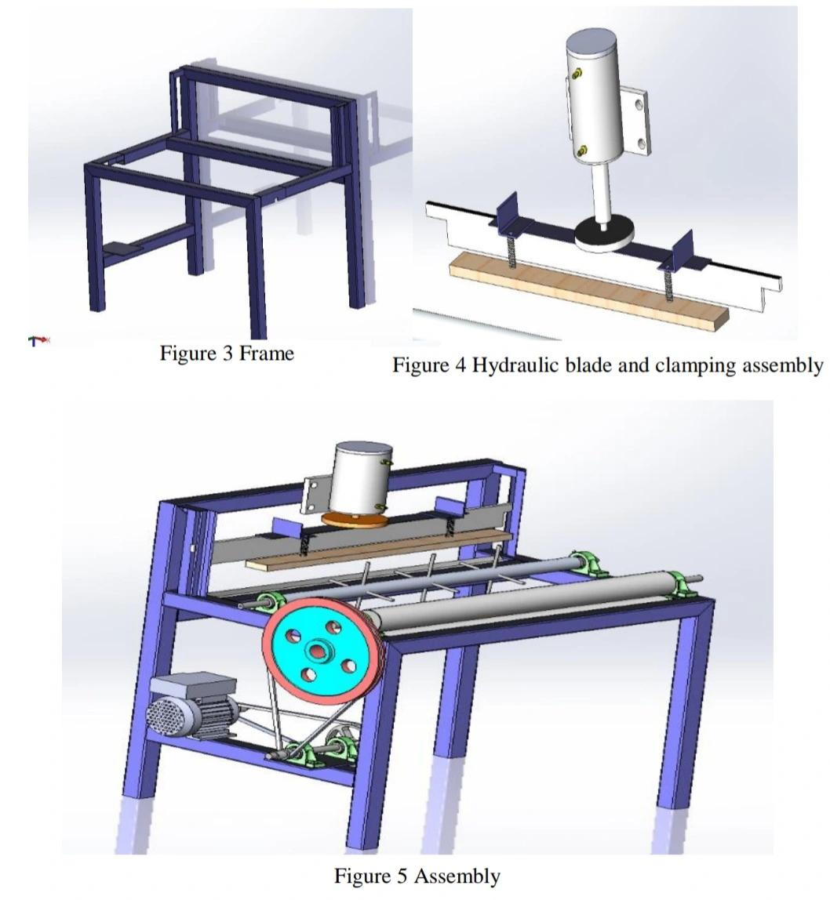
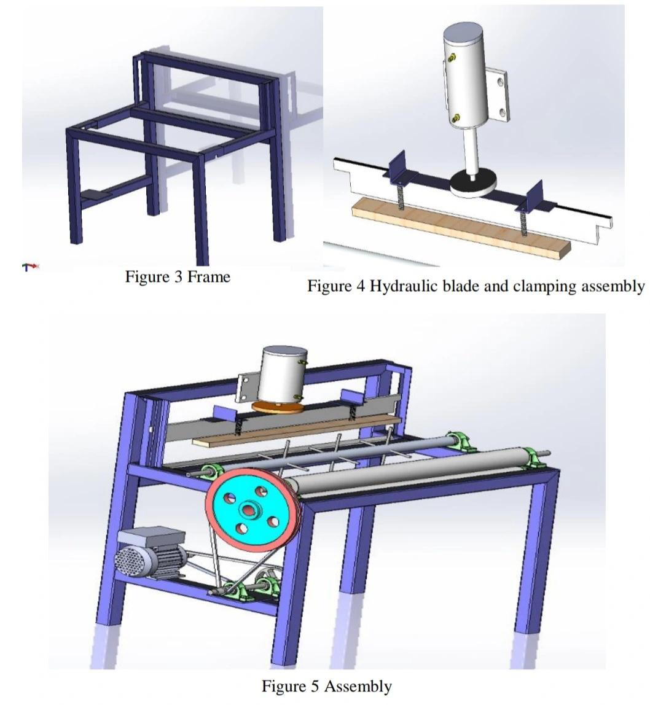

Projects
Machine Learning: Earthquake Damage Prediction
Prediction of Damage Incured by buildings due to 2015 Earthquake in Nepal
RepositoryLink
Skills employed: Machine Learning · Exploratory Data Analysis · Python
Enhancing Drilling Efficiency: Optimization Using Meta-heuristics
Industrial optimization project:Modeled the problem as a Travelling Salesman Problem (TSP)
Optimized path of drilling tool using simulated annealing algorithm, and generated G-Code, reducing the tool path distance.
Skills employed: Optimization · Python

Statistical Data Analysis: Linear Regression of Real-Estate Data
Linear regression analyis of real estate data to model property tax appraisal value using real estate parameters.
Applied ANOVA and developed predictive model to suggest presence of overvaluation by $16500 on average.
For more info: rpubs.com/bishwa221/1040223
Skills Employed: Regression Analysis · ANOVA · R programming · Statistical Data Analysis · Statistical Modeling · Hypothesis Testing
Digital Image Processing: Real-time Card Suit Recognizer
Skills employed: MATLAB · Image Processing
Power BI Project: Visualizing Data in Power BI
Skills employed: Microsoft Power BI
Product Design With Quality Assurance: Smart Accessibility Cane
Skills employed: Benchmarking · House of Quality Pugh Chart, MVP Development
Machine Design and Fabrication
Half Scale Prototype of Shearing Machine for Gabion Messs Skills employed: 3D Modeling · 2D CAD Drawing · Stress Analysis · Schematics · Hydraulic Systems · Machine Design · Metal Fabrication · Bill of Materials
 


Design for IoT Applications
Improvement of Manipulator of Yankrita Humanoid Robot;
Customized Vending Machine;
UV-based Bill Sanitizer
Skills employed: 3D printing · Solid modelling · Machining
Design for Sustainability : Buoyancy-Assisted Trash Cleaner (BAT)
An engineering project designed and fabricated to be pedalled like a bicycle on stagnant water bodies such as lakes to automatically collect floating debris and weeds.
This project was awarded the Best Application Award in MechTRIX 2017, mechanical engineering expo.
More Info
Skills employed: Solidworks · Machine Design
Control Algorithm Design
Feedback controller with input compensation to control DC motor.
Tested stability and controbility.
Skills employed: Control Theory · MATLAB · Simulink
PLC Logic Design
Industrial and lab automation Video Link
Skills employed: PLC Ladder Logic Design · LogixPro Simulator
Skills
- Engineering Design & Simulation
- Statistical Data Analysis
- Machine Learning
- Robotics
- Computer Vision
Software
- SolidWorks
- ANSYS
- LogixPro Simulator (RSLogix 500)
- Power BI
- Minitab
Programming Languages
- Python
- MATLAB
- R